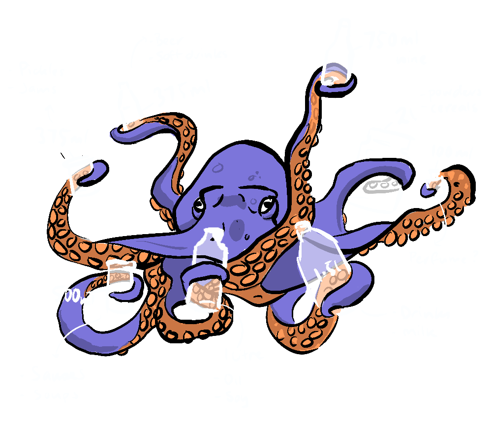

~ a simple recycling idea: part 1 ~
A short one this week. I live in New Zealand, and we kiwis each create a whopping 750kgs of waste per year - top performers in a competition no one wants to win, and our recycling system is a mess. To make matters worse, plastic recycling is all but dead• In 2018 China stopped taking low value plastic recyclables from western nations, because the health and environmental costs to China began to outweigh the profits it created, more on that in a later part, but for now...
Develop a standardised set of different sized glass containers. These are created by a factory funded by the government from recycled glass• Companies can opt in for free to the scheme, not only gaining a free resource, but also good press, by identifying with this environmentally friendly program.

When the jars are used by the consumer, they can be taken to return centres which go back to the factory where the containers are stripped of branding, sterilised, quality checked and then made available for partner companies.
It's a win-win-win
- Avoiding the use of plastics
- Avoiding intensive glass recycling
- Supporting business
There's much more to say and we will return to this topic in successive parts, but I thought I'd drop you all a line to see if anyone has any complimentary ideas, criticisms or examples of schemes like this taking place already•